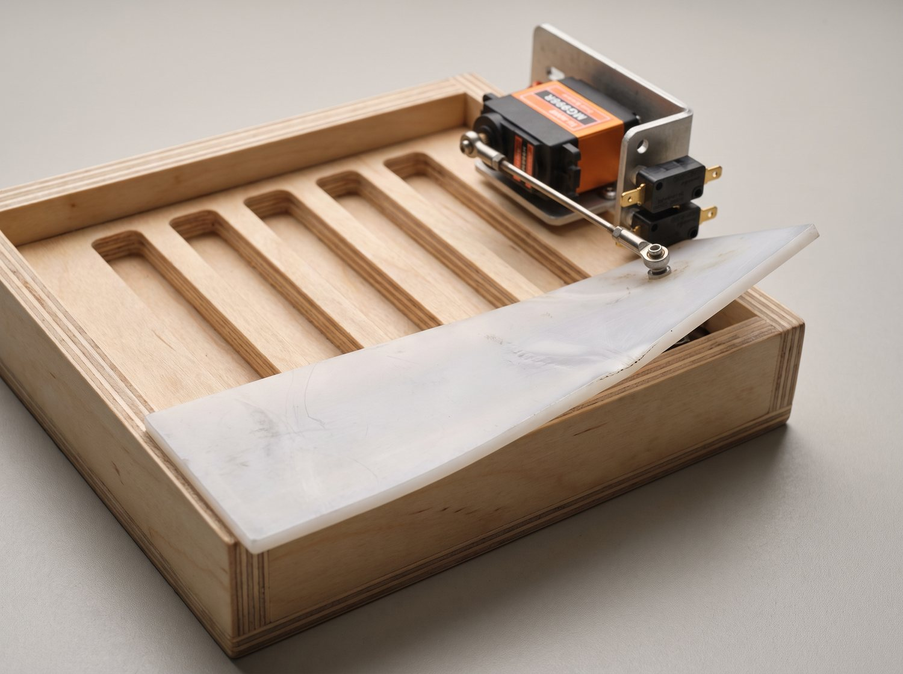
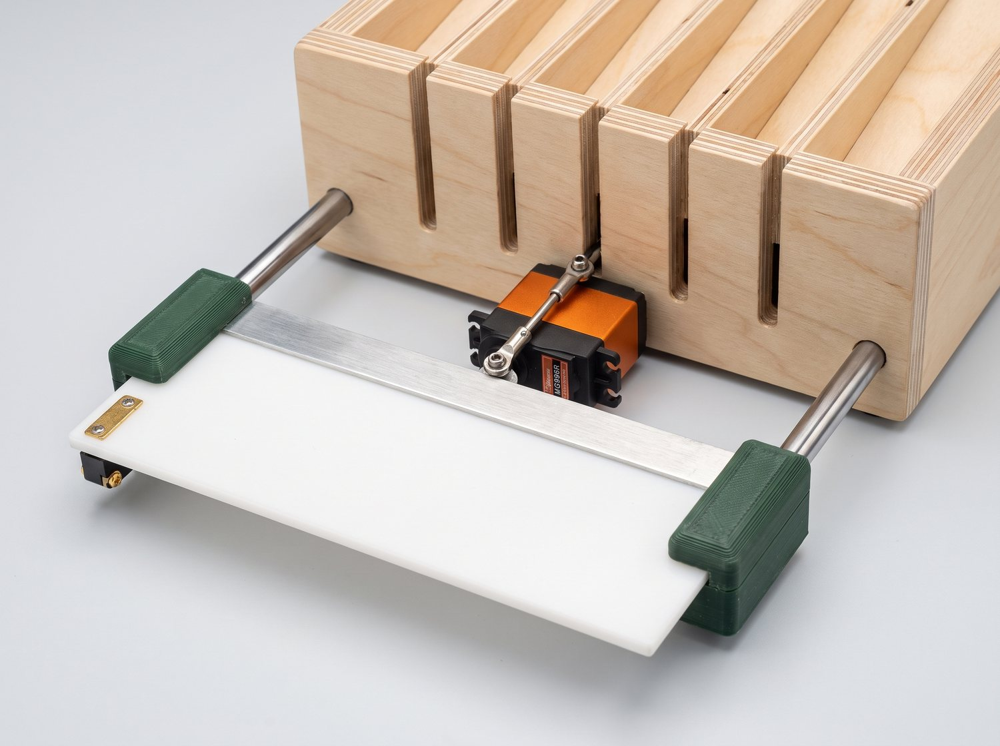
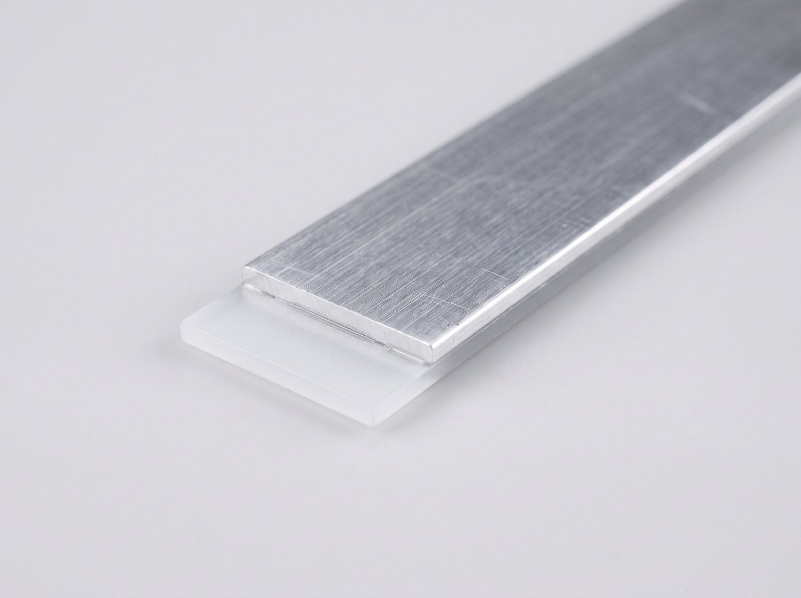
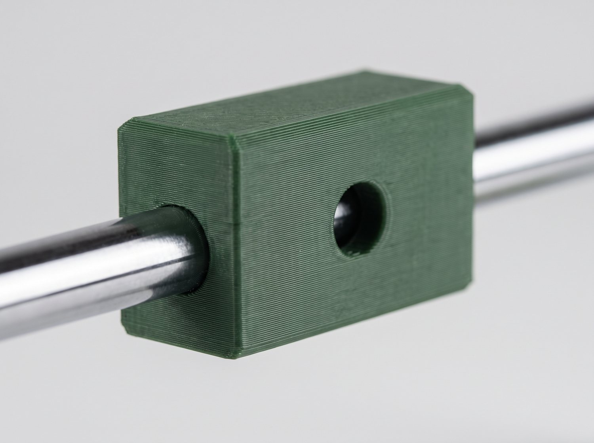
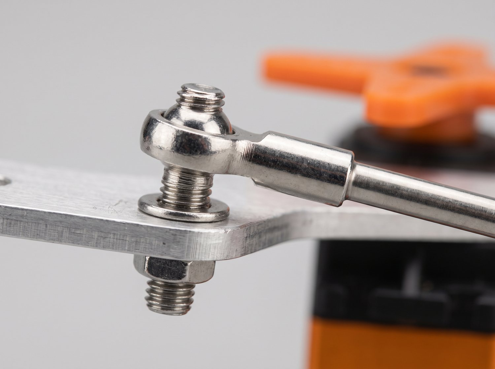
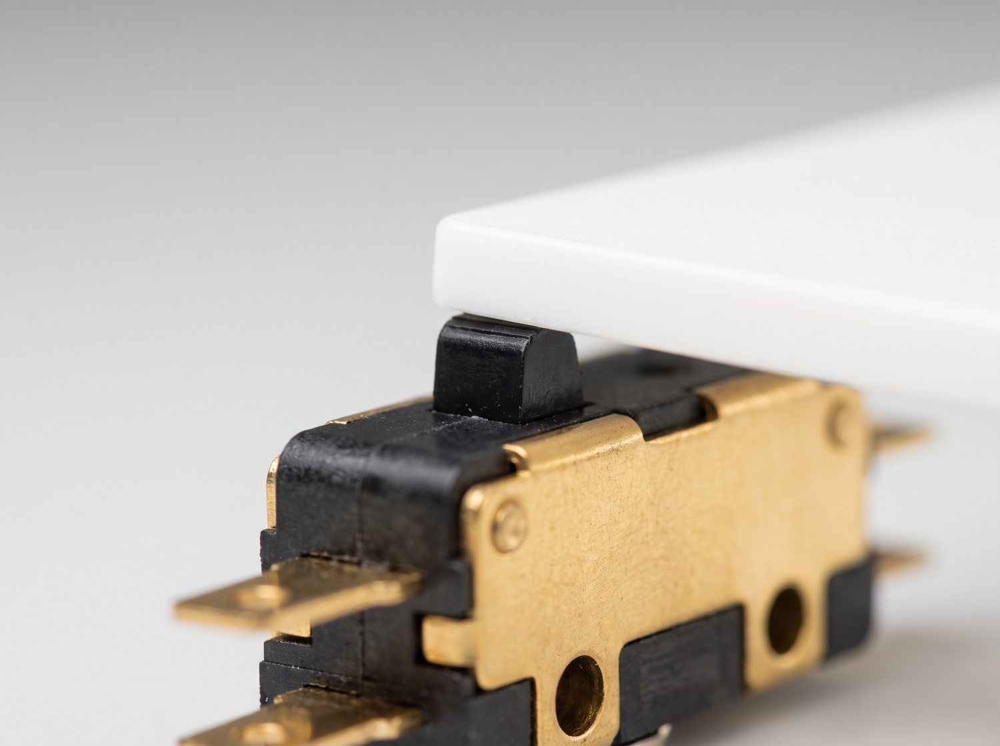
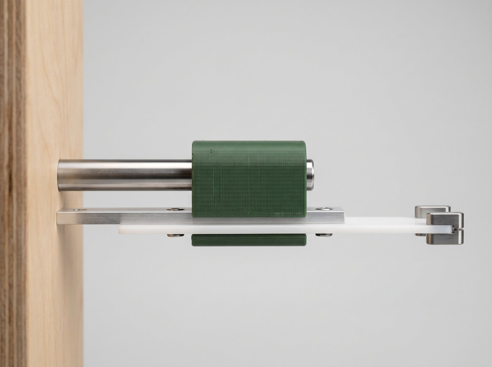

这块白色薄片就是闸片。舵机从一头推它，它就弯、就歪 —— 结果是离舵机近的槽先开，离得远的槽还关着。
GLM 的意思是不用换舵机，加三样小零件把「弯」和「歪」从结构上消掉，再把一个限位开关挪到远端，让你系统第一次能看见闸片远端到底开没开。
同一台机器、同一视角。点图上的圆点，或者点下面任意一行看说明。

1 2 3 4 5
1 2 3 4 5拍给你看的实物长什么样，照着做就行。

1治弯。切一条 110×20 的 2mm 板，沿薄片长边贴上。抗弯刚度按截面高度的立方算，能上一个量级。最便宜的一条，¥3~6。

2治歪。滑块孔比轴粗 0.05~0.1mm，太紧卡死、太松晃。两个滑块一根轴 = 只剩一个自由度。

3治扭。孔位从「一端」挪到「110mm 跨度的正中间」，推力就不产生偏航力矩。几乎零成本。

4治看不见。GLM 说这条的价值不低于同步性本身 —— 不同步你能看到，看不到你连问题在哪儿都不知道。

闸片走到一半（70% 行程）的时候，五个槽分别开了多少。这是「同步」最直白的定义。
你贴过来的原文在「升级判据」四个字那里断了。那几条 —— 什么条件下这套结构值得做、做到什么程度算过关、什么情况下才该换执行器 —— 恰恰决定了「要不要现在就动手」。建议先让 GLM 补全再开工。
1. 后壁装两根光轴，用直尺校平行、同高，孔距 336±0.2 —— 这步偷懒后面全歪。
2. 打印滑块镗孔 Ø3.05，装轴上全行程推一遍，不能有卡点。
3. 骨架贴薄片后缘，滑块固定在骨架上，别让 1mm 薄片独自扛弯矩。
4. 整片装回，连杆接后缘中心，先手推，确认全程平进平出再拧紧球头。
5. 远端装关到位限位，手推到关位再夹紧。
6. 装舵机，标定开到位 / 关到位两个角度，记一张「舵角 ↔ 行程」对照表。